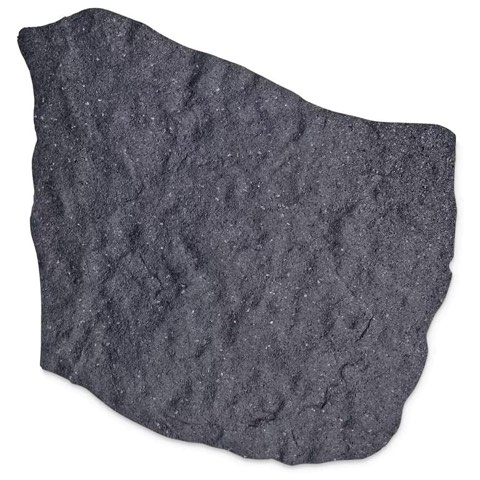
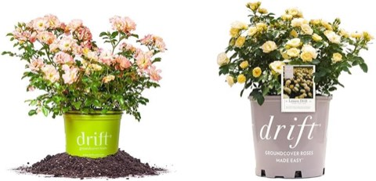
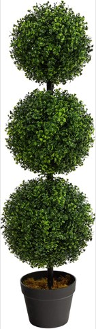
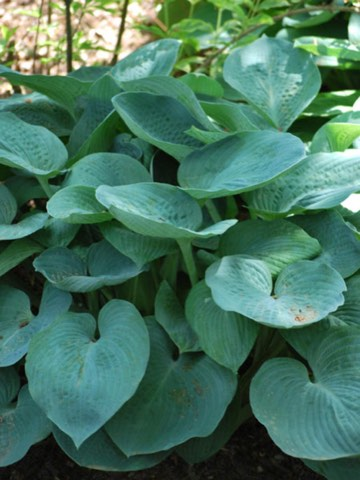
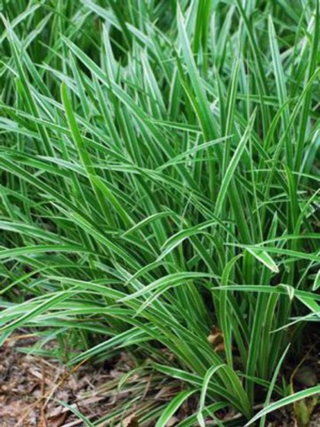
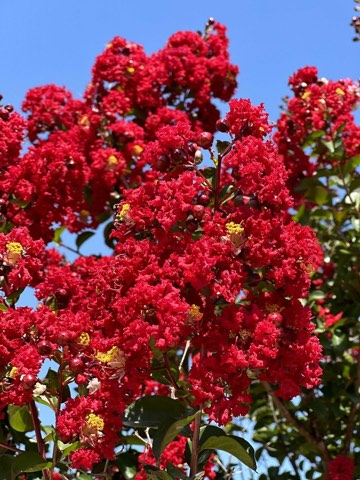

The front yard does more heavy lifting for a home's first impression than almost any single room inside it, and most of that impression comes down to structure, not plant count.
These 12 ideas cover the planning, planting, and finishing choices that separate a yard that reads as designed from one that just happens to have things growing in it.


TierraVerde Rubber Stepping Stones, Natural Rock Look, 18 x 22 Inch, 4 Pack
Shop on Amazon1. Start With Genuinely Low-Maintenance Choices
A yard built around realistic upkeep from the start, drought-tolerant plants, mulched beds instead of expansive lawn, stays looking good for years without constant intervention.
Planning for this early matters because retrofitting a high-maintenance yard into a low-maintenance one later is a far bigger project than getting it right the first time.


Peach Drift Rose and Lemon Drift Rose Bush, 1 Gallon, Live Outdoor Rose Bushes
Shop on Amazon2. Go Vertical With a Trellis
A trellis with a climbing vine adds real height and visual interest without eating into ground space you would otherwise need for beds or path width.
It is especially useful against a bare wall or fence line that would otherwise sit completely unstyled, turning dead space into a feature.

3. Carve Out a Seating Spot
A small bench or cluster of chairs gives the front yard an actual destination, somewhere to pause, rather than just a lawn you walk past on the way inside.
If the idea appeals, it is worth developing further as its own small project, since a seating area tends to pull its own lighting and planting needs along with it.

4. Add Color With Rotating Annuals
Seasonal annuals deliver bursts of color that perennials cannot sustain on their own year-round, and they are easy to refresh as the seasons turn.
Of everything on this list, this is the lowest-commitment way to keep a yard feeling current without touching a single permanent planting.


5. Balance Hardscaping Against Softscaping
Stone, pavers, or a low retaining wall set against plantings creates a far more dynamic, considered landscape than going all-plant or all-hardscape.
That balance also tends to mean less ongoing upkeep overall than a yard that leans entirely on softscaping to carry the whole design.


6. Light the Landscape, Not Just the Porch
Path lights, uplighting aimed at a tree, or accent lighting on an architectural detail extend the yard's appeal well past sunset instead of letting it go dark the moment the sun drops.
This is not purely cosmetic either, it adds real safety and function for anyone approaching the house after dark.


7. Frame the Door With Matching Containers
A pair of matching planters flanking the front door is one of the simplest, most immediately noticeable landscaping additions on this entire list.
Because they are container-grown, seasonal swaps are easy, keeping this one detail feeling current without disturbing anything else in the permanent landscape.


Nearly Natural 36 Inch Artificial Triple Ball Boxwood Topiary Tree with Pot
Shop on Amazon8. Bring in Movement With a Water Feature
A small fountain or simple water feature adds sound and motion that static plantings, no matter how well arranged, simply cannot provide on their own.
It can carry a space as a standalone focal point, or work quietly as a smaller accent tucked into an existing bed.

9. Choose Plants Native to Your Climate
Plants suited to the local climate need less water and less maintenance, and they tend to thrive with far less hands-on intervention than imported varieties ever do.
It is a practical choice and an increasingly popular one, since native planting also supports local pollinators in a way non-native beds generally do not.

10. Layer Plant Beds by Height
Tall plants toward the back, medium ones through the middle, and low groundcover up front builds the kind of depth a single-height planting scheme never achieves.
This one layering principle does more for a professional-looking landscape than any individual plant choice could on its own.


Perennial Farm Marketplace Hosta Blue Angel, Plantain Lily, Live Perennial
Shop on Amazon
Perennial Farm Marketplace Carex Ice Dance, Silver Variegated Sedge Grass
Shop on Amazon11. Anchor the Yard With a Tree
A single, well-placed tree anchors the whole landscape, giving the eye somewhere to land before it starts taking in the smaller details around it.
Checking a tree's mature size before planting matters more than it seems, a lovely sapling today can turn into a real problem against the house or power lines years from now.


Red Flowering Crape Myrtle Trees, Lagerstroemia, Quart Container, 6 Pack
Shop on Amazon12. Finish With a Welcoming Pathway
A defined path running from the sidewalk to the front door gives the whole yard structure, and it naturally guides visitors toward the entrance instead of leaving them to guess.
The material should echo the home's own architecture, a formal brick path suits a different house than a casual run of stepping stones, so this is worth matching deliberately rather than defaulting to whatever's cheapest.


Wrapping It Up
None of these 12 ideas require tackling the entire front yard in a single weekend, or even a single season.
Start with the pathway and a focal point, since those two choices give the whole yard its basic structure, then build outward with planting layers and finishing details as time and budget allow.
A genuinely well-designed front yard carries just as much weight for a home's presence as anything happening behind its front door.